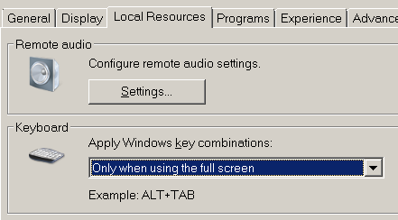

Connect and login to a remote machine using the Remote Desktop Protocol (RDP) also known as Terminal Server Connection (TSC).
Syntax
MSTSC option
MSTSC /Edit "ConnectionFile"
MSTSC /migrate
Options
ConnectionFile The name of an RDP file for connection
/v:<server[:port]> The remote computer to connect to
/console Connect to the console of a server (NT/XP)
/Admin Connect to a session for administering the server(Vista/2008)
/f Start in Full Screen mode
/w:width Width of the RDP screen
/h:height Height of the RDP screen
/span Match the Remote Desktop width and height with the local virtual
desktop, spanning across multiple monitors if necessary.(Vista/2008)
/public Run Remote Desktop in public mode. (Vista/2008)
In public mode, passwords and bitmaps are not cached.
/edit Open the RDP file for editing.
/migrate Convert a legacy Client connection file into an .RDP file
To connect to a remote computer the user account must be a member of the local group 'Remote Desktop users' on the remote server (either directly or inherited via a global group) in addition the user account needs the privilege SeRemoteInteractiveLogonRight (allow logon through RDP/Terminal Services.)
The command CMDKEY can be used to setup/save the password credentials used by Remote Desktop.
Shortcut keys that can be used when connected to a Remote Desktop:
Windows Shortcut Remote Desktop Description Ctrl+ALT+Del Ctrl+ALT+END Bring up the Windows Security dialog box. ALT+TAB ALT+Page Up Switch between programs from left to right. ALT+Shift+TAB ALT+Page Down Switch between programs from right to left. ALT+Esc
ALT+Shift+EscALT+INSERT Switch between programs in the order they were started. Ctrl+Esc ALT+HOME Display the Start menu. n/a Ctrl+ALT+BREAK Switch the client between full-screen mode and window mode. ALT+Space Bar ALT+Delete Displays the remote window's Control menu ALT+Print Screen Ctrl+ALT+NumPad MINUS Place an image of active window onto the Terminal Services clipboard. Print Screen Ctrl+ALT+NumPad PLUS Place an image of the entire TS client on the Terminal Services clipboard.
This is almost the same as pressing ALT+Print Screen to capute the window locally but removes the Windows chrome and so shows more of the remote window.If the RDP shortcut keys don't work - this is dependent on your RDP options/settings.
The window may need to be full screen to accept shortcut keys.
Shortcut keys that can be used when connected to a Citrix Desktop:
Windows Shortcut Citrix Shortcut Description n/a Shift+F1 Display Start Menu in the remote ICA session. n/a Shift+F2 Toggle display of the remote Windows Title bar. n/a Shift+F3 Disconnect the ICA session and exit the ICA Win32 Client.
This might leave the associated application in a disconnected state, depending how the application is configured.Ctrl+ALT+Del Ctrl+F1 Display the Windows NT Security desktop. Ctrl+Esc Ctrl+F2 Display the Task List in the remote ICA session. Ctrl+ Shift+Esc Ctrl+F3 Display the Windows NT Task Manager in the remote ICA session. ALT+Esc ALT+F2 Cycle through any maximized or minimized program Windows in the remote ICA session. ALT+TAB ALT+PLUS Cycle through open applications in the remote ICA session. ALT+SHIFT+TAB ALT+MINUS Cycle through open applications in the remote ICA session but in the opposite direction. Examples:
MSTSC /v:MyServer /f /console
MSTSC /v:127.0.0.1 /w:1024 /h:768
MSTSC /v:MyServer /w:800 /h:600
MSTSC /edit filename.rdp
This error can have several causes:
If using a domain account, prefix with the domain name: SS64dom\user64
If the account is a non-administrator, you may need to grant logon rights as described above.
If the password contains any special characters: $,/,\, Tabs etc then copy and paste of the password may not work.
Specific problems: copy/paste will convert TABs into spaces and double $$'s are removed (e.g. Pa$$word1)
“Ignorance is preferable to error; and he is less remote from the truth who believes nothing, than he who believes what is wrong” - Thomas Jefferson
Related:
Remote Desktop Connection Manager - RDP to multiple machines.
Q216783 - Keep-Alive Disconnected TS Connections
Q2726399 - Cannot change the DPI setting through an RDP session.
MAPISEND - Send email from the command line
RMTSHARE - Share a folder or printer
SHORTCUT - Create a windows shortcut
SHADOW - Monitor/View another users running RDP session.
SHUTDOWN - Shutdown the computer/Log off a user
TSDISCON - Disconnect a Remote Desktop Session
TSSHUTDN - Remotely shut down or reboot a terminal server
VMConnect - Connect to a Hyper-V Virtual Machine
Remote Desktop Services Shortcut Keys - MSDN
Equivalent bash command (Linux): VNCconnect or screen